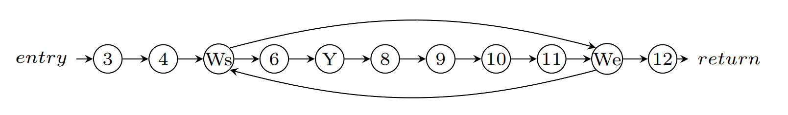
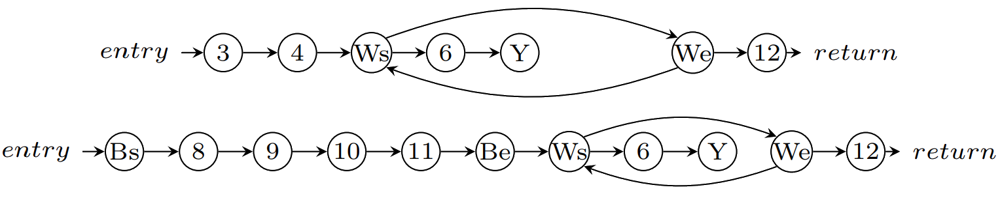
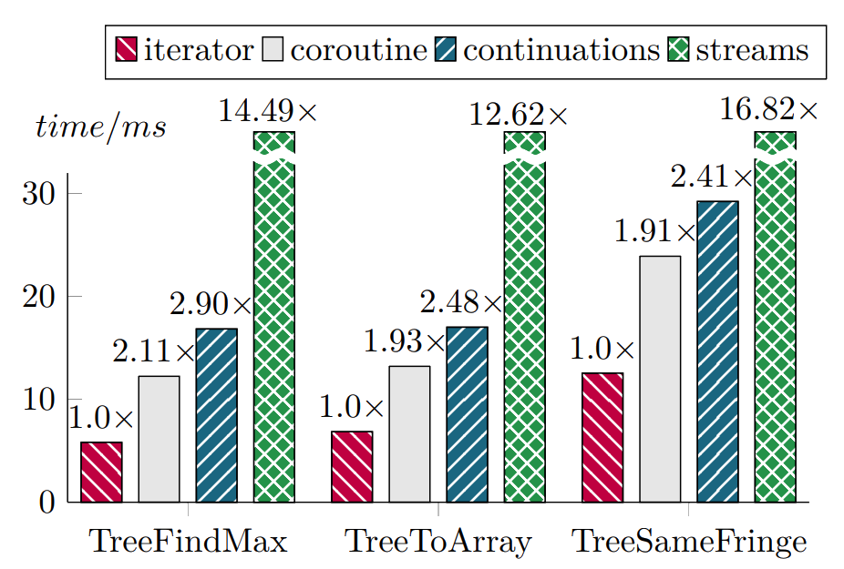
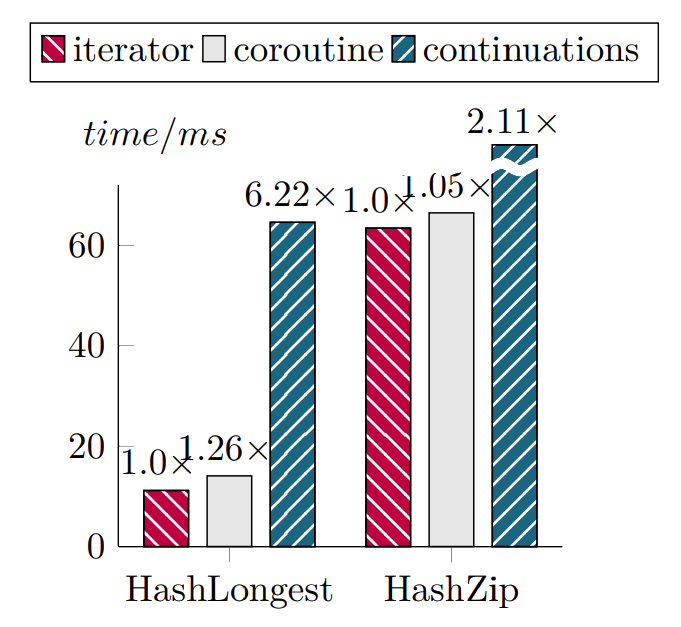
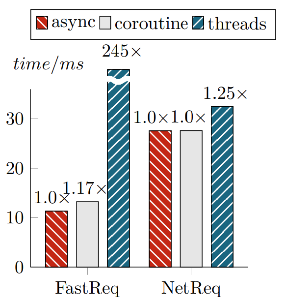
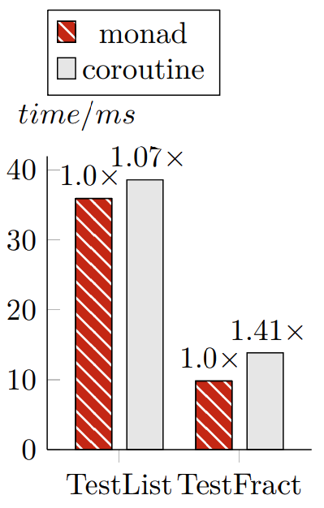

Theory and Practice of
Coroutines with Snapshots

Goal 1
Unify domain-specific control transfer constructs.
Example: iterators
val foreach =
(t: Tree[T], f: T => Unit) =>
if (t != null)
foreach(t.left, f)
f(t.elem)
foreach(t.right, f)
}
Example: Iterators
val iterator =
{ (t: Tree[T]) ~>
if (t != null)
foreach(t.left)
yield(t.elem)
foreach(t.right)
}
}
Example: Async-Await
val r: Future[Json] = request()
r.onSuccess(json => {
println(json)
})
Example: Async-Await
val r: Future[Json] = request()
val json = await(r)
println(json)
Example: Actors
val pass = receive()
assert(isCorrect(pass))
while(true) receive() match {
case Url(p) => serve(p)
case Logout => stop()
}
Example: UIs
var e = mouse.get
while (!e.isDown) e = mouse.get
val c = new Curve
while (e.isDown) {
c.add(e.x, e.y)
e = mouse.get
}
Other examples
I/O, symmetric coroutines, backtracking, monads, continuations.
Goal 2
No VM modifications.
Goal 2
No VM modifications.
Runtime extensions were not successful in the past.
Also, they are not backend-agnostic.
Goal 3
Achieve reasonable performance.
Coroutine
A generalization of a subroutine.
val foreach =
(b: List[T], f: T => Unit) =>
Coroutine
A generalization of a subroutine.
val foreach =
(b: List[T], f: T => Unit) =>
while (b != Nil) {
f(b.head)
b = b.tail
}
Coroutine
A generalization of a subroutine.
val foreach =
(b: List[T], f: T => Unit) =>
while (b != Nil) {
f(b.head)
b = b.tail
}
foreach(1 :: Nil, println)
A subroutine call exists, but cannot be observed.
Coroutine
def zip[T, S]
(xs: List[T], ys: List[S])
: List[(T, S)]
The foreach does not allow traversing two lists simultaneously,
e.g. to implement a zip function.
Coroutine
A generalization of a subroutine.
val inList = coroutine {
(b: List[T], f: T => Unit) =>
while (b != Nil) {
f(b.head)
b = b.tail
}
}
Coroutine
A generalization of a subroutine.
val inList = coroutine {
(b: List[T]) =>
while (b != Nil) {
yieldval(b.head)
b = b.tail
}
}
A yield-point suspends the coroutine and gives a value to the caller.
Calling a coroutine
val inList = coroutine {
(b: List[T]) =>
while (b != Nil) {
yieldval(b.head)
b = b.tail
}
}
val i = inList.start(7)
Value i is a coroutine instance.
Calling a coroutine
val inList = coroutine {
(b: List[T]) =>
while (b != Nil) {
yieldval(b.head)
b = b.tail
}
}
val i = inList.start(7)
while (i.resume) println(i.value)
The proposed coroutine model
Delimited, stackful, type-safe, first-class coroutines with snapshots.
Our implementation relies solely on the metaprogramming support.
Delimited
Yielding is only allowed inside coroutine scopes.
val inList = coroutine {
(b: List[T]) =>
while (b != Nil) {
yieldval(b.head)
b = b.tail
}
}
Stackful
Array[List[T]]
How to traverse this data structure?
Stackful
val inArray = coroutine {
(t: Array[List[T]]) =>
}
Stackful
val inArray = coroutine {
(t: Array[List[T]]) =>
var i = 0
while (i < t.length) {
// Traverse the list t(i)
i += 1
}
}
Stackful
val inArray = coroutine {
(t: Array[List[T]]) =>
var i = 0
while (i < t.length) {
inList(t(i))
i += 1
}
}
Stackful coroutines enable code reuse.
Type-Safe
inArray is allowed to call inList
because they yield the same type.
val inList:
List[T] ~> (T, Unit)
val inArray:
Array[List[T]] ~> (T, Unit)
val i =
inArray.start(Array(List(1)))
Type-Safe
inArray is allowed to call inList
because they yield the same type.
val inList:
List[T] ~> (T, Unit)
val inArray:
Array[List[T]] ~> (T, Unit)
val i: T <~> Unit =
inArray.start(Array(List(x)))
Example: Async-Await
def await[R]:
Future[R] ~> (Future[_], R) =
coroutine { (f: Future[R]) =>
yieldval(f)
f.getValue
}
Snapshots
Snapshots increase the expressive power of coroutines.
val i: Int <~> Unit =
inList.start(List(1))
val j: Int <~> Unit =
i.snapshot
Example: Backtracking
type EnvSetter = () => Unit
type Program = List[EnvSetter] <~> Int
def bt(p: Program) =
if (p.resume)
for (env <- p.value) {
env()
bt(p.snapshot)
}
else
println(p.result)
Example: Backtracking
check {
val a = choose(0 until Int.MaxValue)
val b = choose(0 until Int.MaxValue)
assert(a * b == b * a)
}
No need for monads and input generators.
Implementation
val inList = coroutine {
(b: List[T]) =>
while (b != Nil) {
yieldval(b.head)
b = b.tail
}
}
Implementation
Step 1: normalization
var x_0 = b != Nil
while (x_0) {
var x_1 = b.head
var x_2 = yieldval(x_1)
var x_3 = b.tail
b = x_3
x_0 = b != Nil
}
Implementation
Step 2: CFG conversion
Implementation
Step 3: CFG splitting
Implementation
Step 4: AST reconstruction
class $anon
extends Coroutine1[List[T], T, Unit] {
def ep0(i: Instance[T, Unit]): Unit = ...
def ep1(i: Instance[T, Unit]): Unit = ...
def entry(i: Instance[T, Unit]): Unit =
i match {
case 0 => ep0(i)
case 1 => ep1(i)
}
}
}
Implementation
Instance represents the coroutine instance.
class Instance[Y, R] {
var _live: Boolean = true
var _value: Y = null
var _result: R = null
var _refs: Array[AnyRef]
var _vals: Array[Int]
// ... and a few more things ...
}
Optimizations
Maintaining the coroutine instance state is expensive, so optimizations must reduce amount of memory accesses.
We found that the following optimizations improve performance by up to 2x.
Must-Load Optimization
A variable must only be loaded if the segment uses it.
var x_0 = b != Nil
while (x_0) {
var x_1 = b.head
yieldval(x_1)
var x_2 = b.tail // not load x_0, x_1
b = x_2
x_0 = b != Nil
}
Was-Changed Optimization
A variable must only be stored if the exit point observes its write.
var x_0 = b != Nil
while (x_0) {
var x_1 = b.head // not store b 1st time
yieldval(x_1)
var x_2 = b.tail
b = x_2
x_0 = b != Nil
}
Is-Needed Optimization
A variable must only be stored if it remains in scope up to a transitively reachable segment that needs it.
var x_0 = b != Nil
while (x_0) {
var x_1 = b.head
yieldval(x_1) // not store x_0, x_1
var x_2 = b.tail
b = x_2
x_0 = b != Nil
}
Evaluation
Evaluation
Evaluation
Evaluation
Contributions
- New form of coroutines - coroutines with snapshots
- Implementation in Scala using the metaprogramming API
- Evaluation that shows that the approach is feasible
- Formalization and soundness proof in λ⇝ calculus
Thank you!